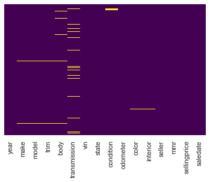
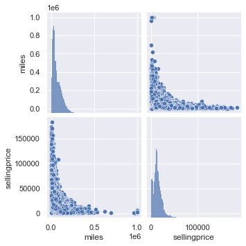
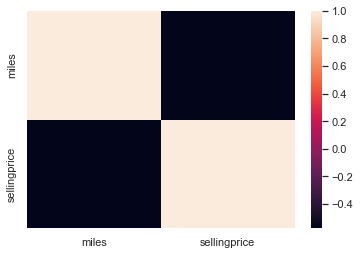
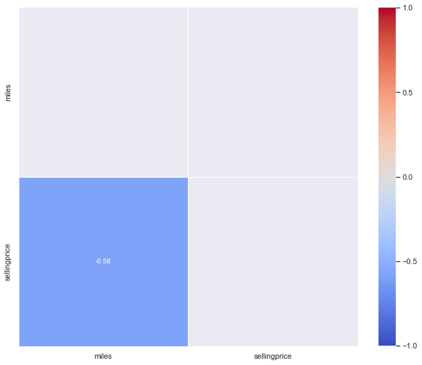
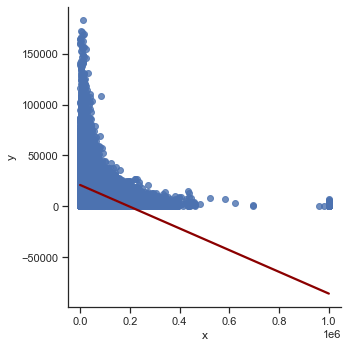
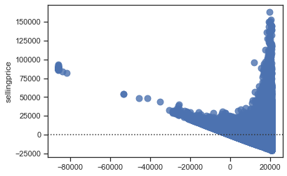

2nd SK-learn model¶
Data¶
Load packages¶
%matplotlib inline
import pandas as pd
import numpy as np
import seaborn as sns
import matplotlib.pyplot as plt
from statsmodels.stats.outliers_influence import variance_inflation_factor
from statsmodels.tools.tools import add_constant
sns.set_theme()
Import Dataset¶
raw_dataset = pd.read_csv("car_prices.csv", on_bad_lines="skip")
df = raw_dataset.copy()
Data inspection¶
df.head(2)
| year | make | model | trim | body | transmission | vin | state | condition | odometer | color | interior | seller | mmr | sellingprice | saledate | |
|---|---|---|---|---|---|---|---|---|---|---|---|---|---|---|---|---|
| 0 | 2015 | Kia | Sorento | LX | SUV | automatic | 5xyktca69fg566472 | ca | 5.0 | 16639.0 | white | black | kia motors america, inc | 20500 | 21500 | Tue Dec 16 2014 12:30:00 GMT-0800 (PST) |
| 1 | 2015 | Kia | Sorento | LX | SUV | automatic | 5xyktca69fg561319 | ca | 5.0 | 9393.0 | white | beige | kia motors america, inc | 20800 | 21500 | Tue Dec 16 2014 12:30:00 GMT-0800 (PST) |
df.info()
<class 'pandas.core.frame.DataFrame'>
RangeIndex: 558811 entries, 0 to 558810
Data columns (total 16 columns):
# Column Non-Null Count Dtype
--- ------ -------------- -----
0 year 558811 non-null int64
1 make 548510 non-null object
2 model 548412 non-null object
3 trim 548160 non-null object
4 body 545616 non-null object
5 transmission 493458 non-null object
6 vin 558811 non-null object
7 state 558811 non-null object
8 condition 547017 non-null float64
9 odometer 558717 non-null float64
10 color 558062 non-null object
11 interior 558062 non-null object
12 seller 558811 non-null object
13 mmr 558811 non-null int64
14 sellingprice 558811 non-null int64
15 saledate 558811 non-null object
dtypes: float64(2), int64(3), object(11)
memory usage: 68.2+ MB
# show missing values (missing values - if present - will be displayed in yellow)
sns.heatmap(df.isnull(),
yticklabels=False,
cbar=False,
cmap='viridis');

print(df.isnull().sum())
year 0
make 10301
model 10399
trim 10651
body 13195
transmission 65353
vin 0
state 0
condition 11794
odometer 94
color 749
interior 749
seller 0
mmr 0
sellingprice 0
saledate 0
dtype: int64
Data transformation¶
# drop column with too many missing values
df = df.drop(['transmission'], axis=1)
# drop remaining row with one missing value
df = df.dropna()
# Drop irrelevant features
df = df.drop(['trim', 'vin', 'mmr'], axis=1)
print(df.isnull().sum())
year 0
make 0
model 0
body 0
state 0
condition 0
odometer 0
color 0
interior 0
seller 0
sellingprice 0
saledate 0
dtype: int64
# rename columns
df = df.rename(columns={
"make" : "brand",
"body" : "type",
"odometer" : "miles"}
)
df.info()
<class 'pandas.core.frame.DataFrame'>
Int64Index: 533660 entries, 0 to 558810
Data columns (total 12 columns):
# Column Non-Null Count Dtype
--- ------ -------------- -----
0 year 533660 non-null int64
1 brand 533660 non-null object
2 model 533660 non-null object
3 type 533660 non-null object
4 state 533660 non-null object
5 condition 533660 non-null float64
6 miles 533660 non-null float64
7 color 533660 non-null object
8 interior 533660 non-null object
9 seller 533660 non-null object
10 sellingprice 533660 non-null int64
11 saledate 533660 non-null object
dtypes: float64(2), int64(2), object(8)
memory usage: 52.9+ MB
# transform into lowercase
df["brand"] = df["brand"].str.lower()
df["model"] = df["model"].str.lower()
df["type"] = df["type"].str.lower()
Categorial or numeric?¶
year = categorial
brand = categorial
model = categorial
type = categorial
state = categorial
condition = categorial
miles = numeric
color = categorial
interior = categorial
seller = categorial
ratingprice = numeric
sellingprice = numeric
saledate = categorial
# In kategorische Variablen umwandeln:
for cat in ["year", "brand", "model", "type", "state", "condition", "color", "interior", "seller", "saledate"]:
df[cat] = df[cat].astype("category")
df.info()
<class 'pandas.core.frame.DataFrame'>
Int64Index: 533660 entries, 0 to 558810
Data columns (total 12 columns):
# Column Non-Null Count Dtype
--- ------ -------------- -----
0 year 533660 non-null category
1 brand 533660 non-null category
2 model 533660 non-null category
3 type 533660 non-null category
4 state 533660 non-null category
5 condition 533660 non-null category
6 miles 533660 non-null float64
7 color 533660 non-null category
8 interior 533660 non-null category
9 seller 533660 non-null category
10 sellingprice 533660 non-null int64
11 saledate 533660 non-null category
dtypes: category(10), float64(1), int64(1)
memory usage: 19.6 MB
# summary statistics for all categorical columns
df.describe(include=['category']).transpose()
| count | unique | top | freq | |
|---|---|---|---|---|
| year | 533660 | 26 | 2012 | 100612 |
| brand | 533660 | 53 | ford | 91908 |
| model | 533660 | 768 | altima | 19159 |
| type | 533660 | 45 | sedan | 236445 |
| state | 533660 | 38 | fl | 79626 |
| condition | 533660.0 | 41.0 | 1.9 | 40404.0 |
| color | 533660 | 20 | black | 106600 |
| interior | 533660 | 17 | black | 238668 |
| seller | 533660 | 12739 | nissan-infiniti lt | 19677 |
| saledate | 533660 | 3687 | Tue Feb 10 2015 01:30:00 GMT-0800 (PST) | 5231 |
Data splitting¶
train_dataset = df.sample(frac=0.8, random_state=0)
test_dataset = df.drop(train_dataset.index)
train_dataset
| year | brand | model | type | state | condition | miles | color | interior | seller | sellingprice | saledate | |
|---|---|---|---|---|---|---|---|---|---|---|---|---|
| 530723 | 2000 | volvo | s40 | sedan | fl | 2.0 | 90938.0 | gray | gray | vietnam veterans of america | 325 | Thu Jun 11 2015 06:25:00 GMT-0700 (PDT) |
| 309554 | 2012 | honda | cr-v | suv | tn | 3.8 | 35209.0 | white | gray | wholesale inc # 2 | 19800 | Wed Feb 18 2015 02:30:00 GMT-0800 (PST) |
| 527934 | 2008 | mercedes-benz | s-class | sedan | pa | 4.0 | 70838.0 | — | brown | r hollenshead auto sales inc | 25250 | Fri Jun 12 2015 02:00:00 GMT-0700 (PDT) |
| 44135 | 2010 | dodge | grand caravan | minivan | qc | 4.4 | 94913.0 | red | black | goldstar motors | 7800 | Tue Dec 23 2014 10:00:00 GMT-0800 (PST) |
| 429520 | 2014 | nissan | pathfinder | suv | mo | 3.7 | 39827.0 | silver | black | avis corporation | 21300 | Wed Jun 17 2015 03:30:00 GMT-0700 (PDT) |
| ... | ... | ... | ... | ... | ... | ... | ... | ... | ... | ... | ... | ... |
| 118707 | 2014 | ford | e-series wagon | van | tx | 3.5 | 29584.0 | — | gray | avis budget group | 18300 | Thu Jan 15 2015 02:30:00 GMT-0800 (PST) |
| 105346 | 2011 | nissan | maxima | sedan | ca | 2.3 | 48630.0 | black | gold | spreen honda | 14600 | Thu Jan 08 2015 12:00:00 GMT-0800 (PST) |
| 451157 | 2013 | infiniti | g sedan | g sedan | nj | 3.6 | 22285.0 | black | black | nissan infiniti lt | 20400 | Wed May 27 2015 02:30:00 GMT-0700 (PDT) |
| 401984 | 2008 | nissan | sentra | sedan | tn | 1.9 | 111493.0 | white | black | nissan motor acceptance corporation | 3400 | Tue Mar 10 2015 03:30:00 GMT-0700 (PDT) |
| 98497 | 2011 | bmw | 3 series | coupe | ca | 2.0 | 23815.0 | gray | black | financial services remarketing (lease) | 17500 | Tue Feb 03 2015 04:30:00 GMT-0800 (PST) |
426928 rows × 12 columns
Exploratory data analysis¶
# summary statistics for all numerical columns
#round(train_dataset.describe(),2).transpose()
sns.pairplot(train_dataset);

Correlation analysis¶
# Create correlation matrix for numerical variables
corr_matrix = train_dataset.corr()
corr_matrix
| miles | sellingprice | |
|---|---|---|
| miles | 1.000000 | -0.576428 |
| sellingprice | -0.576428 | 1.000000 |
# Simple heatmap
heatmap = sns.heatmap(corr_matrix)

# Make a pretty heatmap
# Use a mask to plot only part of a matrix
mask = np.zeros_like(corr_matrix)
mask[np.triu_indices_from(mask)]= True
# Change size
plt.subplots(figsize=(11, 15))
# Build heatmap with additional options
heatmap = sns.heatmap(corr_matrix,
mask = mask,
square = True,
linewidths = .5,
cmap = 'coolwarm',
cbar_kws = {'shrink': .6,
'ticks' : [-1, -.5, 0, 0.5, 1]},
vmin = -1,
vmax = 1,
annot = True,
annot_kws = {"size": 10})

Data preprocessing pipeline¶
# Modules
from sklearn.compose import ColumnTransformer
from sklearn.compose import make_column_selector as selector
from sklearn.pipeline import Pipeline
from sklearn.impute import SimpleImputer
from sklearn import set_config
from sklearn.preprocessing import StandardScaler, OneHotEncoder
# for numeric features
numeric_transformer = Pipeline(steps=[
('imputer', SimpleImputer(strategy='median')),
('scaler', StandardScaler())
])
# for categorical features
categorical_transformer = Pipeline(steps=[
('imputer', SimpleImputer(strategy='constant', fill_value='missing')),
('onehot', OneHotEncoder(handle_unknown='ignore'))
])
# Pipeline
preprocessor = ColumnTransformer(transformers=[
('num', numeric_transformer, selector(dtype_exclude="category")),
('cat', categorical_transformer, selector(dtype_include="category"))
])
df.head()
| year | brand | model | type | state | condition | miles | color | interior | seller | sellingprice | saledate | |
|---|---|---|---|---|---|---|---|---|---|---|---|---|
| 0 | 2015 | kia | sorento | suv | ca | 5.0 | 16639.0 | white | black | kia motors america, inc | 21500 | Tue Dec 16 2014 12:30:00 GMT-0800 (PST) |
| 1 | 2015 | kia | sorento | suv | ca | 5.0 | 9393.0 | white | beige | kia motors america, inc | 21500 | Tue Dec 16 2014 12:30:00 GMT-0800 (PST) |
| 2 | 2014 | bmw | 3 series | sedan | ca | 4.5 | 1331.0 | gray | black | financial services remarketing (lease) | 30000 | Thu Jan 15 2015 04:30:00 GMT-0800 (PST) |
| 3 | 2015 | volvo | s60 | sedan | ca | 4.1 | 14282.0 | white | black | volvo na rep/world omni | 27750 | Thu Jan 29 2015 04:30:00 GMT-0800 (PST) |
| 4 | 2014 | bmw | 6 series gran coupe | sedan | ca | 4.3 | 2641.0 | gray | black | financial services remarketing (lease) | 67000 | Thu Dec 18 2014 12:30:00 GMT-0800 (PST) |
Simple regression¶
# Select features for simple regression
features = ['miles']
X = df[features]
# Create response
y = df["sellingprice"]
# check feature
X.info()
<class 'pandas.core.frame.DataFrame'>
Int64Index: 533660 entries, 0 to 558810
Data columns (total 1 columns):
# Column Non-Null Count Dtype
--- ------ -------------- -----
0 miles 533660 non-null float64
dtypes: float64(1)
memory usage: 24.3 MB
# check label
y
0 21500
1 21500
2 30000
3 27750
4 67000
...
558806 33000
558807 30800
558808 34000
558809 11100
558810 26700
Name: sellingprice, Length: 533660, dtype: int64
# check for missing values
print("Missing values X:",X.isnull().any(axis=1).sum())
print("Missing values Y:",y.isnull().sum())
Missing values X: 0
Missing values Y: 0
Data splitting¶
from sklearn.model_selection import train_test_split
# Train Test Split
X_train, X_test, y_train, y_test = train_test_split(X, y, test_size=0.2, random_state=42)
Modeling¶
from sklearn.linear_model import LinearRegression
# Create pipeline with model
lm_pipe = Pipeline(steps=[
('preprocessor', preprocessor),
('lm', LinearRegression())
])
# show pipeline
set_config(display="diagram")
# Fit model
lm_pipe.fit(X_train, y_train)
Pipeline(steps=[('preprocessor',
ColumnTransformer(transformers=[('num',
Pipeline(steps=[('imputer',
SimpleImputer(strategy='median')),
('scaler',
StandardScaler())]),
<sklearn.compose._column_transformer.make_column_selector object at 0x7f87203f0790>),
('cat',
Pipeline(steps=[('imputer',
SimpleImputer(fill_value='missing',
strategy='constant')),
('onehot',
OneHotEncoder(handle_unknown='ignore'))]),
<sklearn.compose._column_transformer.make_column_selector object at 0x7f87203f0990>)])),
('lm', LinearRegression())])Please rerun this cell to show the HTML repr or trust the notebook.Pipeline(steps=[('preprocessor',
ColumnTransformer(transformers=[('num',
Pipeline(steps=[('imputer',
SimpleImputer(strategy='median')),
('scaler',
StandardScaler())]),
<sklearn.compose._column_transformer.make_column_selector object at 0x7f87203f0790>),
('cat',
Pipeline(steps=[('imputer',
SimpleImputer(fill_value='missing',
strategy='constant')),
('onehot',
OneHotEncoder(handle_unknown='ignore'))]),
<sklearn.compose._column_transformer.make_column_selector object at 0x7f87203f0990>)])),
('lm', LinearRegression())])ColumnTransformer(transformers=[('num',
Pipeline(steps=[('imputer',
SimpleImputer(strategy='median')),
('scaler', StandardScaler())]),
<sklearn.compose._column_transformer.make_column_selector object at 0x7f87203f0790>),
('cat',
Pipeline(steps=[('imputer',
SimpleImputer(fill_value='missing',
strategy='constant')),
('onehot',
OneHotEncoder(handle_unknown='ignore'))]),
<sklearn.compose._column_transformer.make_column_selector object at 0x7f87203f0990>)])<sklearn.compose._column_transformer.make_column_selector object at 0x7f87203f0790>
SimpleImputer(strategy='median')
StandardScaler()
<sklearn.compose._column_transformer.make_column_selector object at 0x7f87203f0990>
SimpleImputer(fill_value='missing', strategy='constant')
OneHotEncoder(handle_unknown='ignore')
LinearRegression()
# Obtain model coefficients
lm_pipe.named_steps['lm'].coef_
array([-5576.06320538])
Evaluation with training data¶
X_train.head()
| miles | |
|---|---|
| 56243 | 11527.0 |
| 374437 | 25436.0 |
| 90062 | 101963.0 |
| 142456 | 47619.0 |
| 171477 | 176019.0 |
y_pred = lm_pipe.predict(X_train)
from sklearn.metrics import r2_score
r2_score(y_train, y_pred)
0.33186380016753614
from sklearn.metrics import mean_squared_error
mean_squared_error(y_train, y_pred)
62598005.57227228
# RMSE
mean_squared_error(y_train, y_pred, squared=False)
7911.8901390421415
from sklearn.metrics import mean_absolute_error
mean_absolute_error(y_train, y_pred)
5490.50243705971
%matplotlib inline
import seaborn as sns
sns.set_theme(style="ticks")
# Plot with Seaborn
# We first need to create a DataFrame
df_train = pd.DataFrame({'x': X_train['miles'], 'y':y_train})
sns.lmplot(x='x', y='y', data=df_train, line_kws={'color': 'darkred'}, ci=False);

import plotly.io as pio
import plotly.offline as py
import plotly.express as px
# Plot with Plotly Express
fig = px.scatter(x=X_train['miles'], y=y_train, opacity=0.65,
trendline='ols', trendline_color_override='darkred');
fig.show()
---------------------------------------------------------------------------
ModuleNotFoundError Traceback (most recent call last)
/var/folders/9r/ym9jxwt15b70q43zrdvqgmdh0000gn/T/ipykernel_25980/548667493.py in <module>
----> 1 import plotly.io as pio
2 import plotly.offline as py
3 import plotly.express as px
4
5 # Plot with Plotly Express
ModuleNotFoundError: No module named 'plotly'
sns.residplot(x=y_pred, y=y_train, scatter_kws={"s": 80});

# wrongest predictions
# create dataframe
df_error = pd.DataFrame(
{ "y": y_train,
"y_pred": y_pred,
"error": y_pred - y_train
})
# sort by error, select top 10 and get index
error_index = df_error.sort_values(by=['error']).nlargest(10, 'error').index
# show corresponding data observations
df.iloc[error_index]
| year | brand | model | type | state | condition | miles | color | interior | seller | sellingprice | saledate | |
|---|---|---|---|---|---|---|---|---|---|---|---|---|
| 61616 | 2013 | honda | accord | sedan | ga | 4.1 | 13794.0 | black | black | ahfc/honda lease trust/hvt, inc. | 18500 | Tue Dec 30 2014 13:00:00 GMT-0800 (PST) |
| 531016 | 2014 | chevrolet | traverse | suv | il | 3.0 | 15881.0 | gray | gray | gm remarketing | 21500 | Tue Jun 16 2015 03:00:00 GMT-0700 (PDT) |
| 41444 | 2014 | toyota | camry | sedan | co | 4.3 | 12419.0 | silver | black | toyota motor sales usa inc/program | 16800 | Tue Dec 23 2014 11:45:00 GMT-0800 (PST) |
| 543646 | 2013 | audi | s6 | sedan | nv | 4.3 | 29013.0 | white | black | findlay chevrolet | 51500 | Fri Jun 12 2015 05:00:00 GMT-0700 (PDT) |
| 95291 | 1996 | jeep | grand cherokee | suv | ca | 2.0 | 126799.0 | red | gray | crest motors | 1500 | Tue Jan 06 2015 12:30:00 GMT-0800 (PST) |
| 332547 | 2012 | ford | f-250 super duty | crew cab | tx | 4.9 | 23339.0 | black | black | texas rv outlet superstore | 44800 | Wed Feb 18 2015 02:20:00 GMT-0800 (PST) |
| 263467 | 2012 | acura | tl | sedan | nj | 4.3 | 16538.0 | gray | gray | ahfc/honda lease trust/hvt, inc. eot | 22900 | Wed Feb 11 2015 01:30:00 GMT-0800 (PST) |
| 40518 | 2004 | ford | explorer | suv | fl | 1.9 | 162284.0 | green | beige | east coast financial | 1100 | Tue Jan 06 2015 01:15:00 GMT-0800 (PST) |
| 390097 | 2012 | toyota | highlander | suv | wi | 2.0 | 49557.0 | black | gray | toyota financial services | 20500 | Wed Mar 04 2015 02:00:00 GMT-0800 (PST) |
| 33169 | 2013 | hyundai | elantra | sedan | az | 3.9 | 37232.0 | brown | tan | enterprise veh exchange/rental | 11500 | Thu Dec 18 2014 11:30:00 GMT-0800 (PST) |
Evaluation with test data¶
y_pred = lm_pipe.predict(X_test)
print('MSE:', mean_squared_error(y_test, y_pred))
print('RMSE:', mean_squared_error(y_test, y_pred, squared=False))
MSE: 61969186.55675754
RMSE: 7872.050975238762
# Plot with Plotly Express
fig = px.scatter(x=X_test['miles'], y=y_test, opacity=0.65,
trendline='ols', trendline_color_override='darkred')
fig.show()
Multiple Regression¶
# Select features for multiple regression
features= [
'miles',
'brand',
'model',
'type',
'condition',
'color'
]
X = df[features]
X.info()
print("Missing values:",X.isnull().any(axis = 1).sum())
# Create response
y = df["sellingprice"]
<class 'pandas.core.frame.DataFrame'>
Int64Index: 533660 entries, 0 to 558810
Data columns (total 6 columns):
# Column Non-Null Count Dtype
--- ------ -------------- -----
0 miles 533660 non-null float64
1 brand 533660 non-null category
2 model 533660 non-null category
3 type 533660 non-null category
4 condition 533660 non-null category
5 color 533660 non-null category
dtypes: category(5), float64(1)
memory usage: 27.3 MB
Missing values: 0
# Data splitting
X_train, X_test, y_train, y_test = train_test_split(X, y, test_size=0.2, random_state=42)
# Create pipeline with model
lm_pipe = Pipeline(steps=[
('preprocessor', preprocessor),
('lm', LinearRegression())
])
# show pipeline
set_config(display="diagram")
# Fit model
lm_pipe.fit(X_train, y_train)
Pipeline(steps=[('preprocessor',
ColumnTransformer(transformers=[('num',
Pipeline(steps=[('imputer',
SimpleImputer(strategy='median')),
('scaler',
StandardScaler())]),
<sklearn.compose._column_transformer.make_column_selector object at 0x7f7ed4ff2e20>),
('cat',
Pipeline(steps=[('imputer',
SimpleImputer(fill_value='missing',
strategy='constant')),
('onehot',
OneHotEncoder(handle_unknown='ignore'))]),
<sklearn.compose._column_transformer.make_column_selector object at 0x7f7ed4ff2cd0>)])),
('lm', LinearRegression())])Please rerun this cell to show the HTML repr or trust the notebook.Pipeline(steps=[('preprocessor',
ColumnTransformer(transformers=[('num',
Pipeline(steps=[('imputer',
SimpleImputer(strategy='median')),
('scaler',
StandardScaler())]),
<sklearn.compose._column_transformer.make_column_selector object at 0x7f7ed4ff2e20>),
('cat',
Pipeline(steps=[('imputer',
SimpleImputer(fill_value='missing',
strategy='constant')),
('onehot',
OneHotEncoder(handle_unknown='ignore'))]),
<sklearn.compose._column_transformer.make_column_selector object at 0x7f7ed4ff2cd0>)])),
('lm', LinearRegression())])ColumnTransformer(transformers=[('num',
Pipeline(steps=[('imputer',
SimpleImputer(strategy='median')),
('scaler', StandardScaler())]),
<sklearn.compose._column_transformer.make_column_selector object at 0x7f7ed4ff2e20>),
('cat',
Pipeline(steps=[('imputer',
SimpleImputer(fill_value='missing',
strategy='constant')),
('onehot',
OneHotEncoder(handle_unknown='ignore'))]),
<sklearn.compose._column_transformer.make_column_selector object at 0x7f7ed4ff2cd0>)])<sklearn.compose._column_transformer.make_column_selector object at 0x7f7ed4ff2e20>
SimpleImputer(strategy='median')
StandardScaler()
<sklearn.compose._column_transformer.make_column_selector object at 0x7f7ed4ff2cd0>
SimpleImputer(fill_value='missing', strategy='constant')
OneHotEncoder(handle_unknown='ignore')
LinearRegression()
# Obtain model coefficients
lm_pipe.named_steps['lm'].coef_
array([-4.56717310e+03, -6.39295886e+03, 2.94670276e+04, 8.48026322e+03,
5.89729378e+04, -1.15435924e+02, -1.26416008e+04, -5.92110550e+03,
-7.42202280e+03, -3.21452622e+03, -7.36578267e+03, 7.71738420e+04,
-1.21920093e+04, 9.35583502e+03, -1.03720055e+04, -4.05227398e+03,
-1.54867148e+04, -9.89667083e+03, -9.95508601e+02, -1.17448291e+04,
8.09648783e+03, -1.32342721e+04, 2.38158436e+03, -6.28096627e+03,
-1.11571256e+04, 4.11928687e+04, -3.74985162e+03, -2.11085164e+03,
-9.49655492e+03, 7.02780575e+03, 1.05294538e+04, -7.04093998e+03,
-1.27141288e+02, -1.25046006e+04, -1.00391980e+04, -1.28647304e+04,
-1.43069591e+04, -1.14900734e+04, -6.49756230e+03, -1.24944225e+04,
1.24827952e+04, -7.18232380e+03, 6.31018526e+04, -1.15202002e+04,
-1.34154688e+04, -1.15472009e+04, -1.06978044e+04, -8.40933469e+03,
-1.40031426e+04, 1.87481977e+04, -8.13932114e+03, -1.10098947e+04,
-9.87756582e+03, -7.33317317e+03, -1.20260771e+03, -9.51260890e+03,
7.73471311e+03, -1.15585369e+04, 2.48992520e+03, 6.51461307e+03,
-5.54552885e+03, -6.33703735e+03, 7.88914446e+03, -6.21796702e+03,
-1.32554357e+04, 4.28805611e+03, -9.15934899e+03, 4.72419880e+03,
9.72104529e+03, 2.20576952e+03, -2.49613650e+04, 7.77618812e+03,
1.06952360e+04, 1.17434496e+04, -9.79704058e+03, 7.43312604e+04,
2.77825837e+03, -1.70199477e+03, 7.67921176e+03, -5.82100467e+03,
-1.59826575e+04, -2.69554490e+03, -3.67545973e+03, -6.99610431e+03,
8.39588831e+03, 2.61385595e+04, -3.74521084e+03, -2.58879130e+03,
-3.12577588e+03, -1.44159199e+03, -3.48578073e+03, -1.96572526e+03,
-4.62710224e+03, 2.68028598e+04, 3.16888052e+02, 2.51437995e+03,
-1.68969133e+04, -1.76000395e+04, -1.03306061e+04, -1.25189885e+04,
6.80199377e+03, -4.10541758e+03, 7.98128451e+03, -4.60564773e+03,
-8.70231573e+02, 7.04954463e+02, 5.80721167e+03, 2.05143924e+03,
-9.89336005e+01, 1.46517923e+04, 9.03838093e+02, 6.81843855e+02,
-1.46097948e+03, -5.39233239e+03, -2.19447337e+04, 1.27855206e+03,
2.67726321e+03, -2.07871871e+03, -1.43486498e+03, 7.47643355e+03,
-2.38560318e+03, -8.65420300e+03, -4.29813109e+03, -2.83730300e+03,
-3.09867337e+03, -2.14276850e+02, 7.89423150e+01, -5.74513792e+02,
-2.86024564e+03, -2.51251419e+03, -4.92111015e+03, 6.41724933e+01,
5.72522813e+03, -7.31540099e+03, -8.56812698e+03, -5.16814475e+03,
-2.02526477e+03, 1.25136503e+03, -1.61667087e+03, -5.94581600e+03,
-6.82517591e+03, -6.13354065e+03, -6.58116497e+03, -4.35367030e+03,
-8.06624176e+03, -3.46372505e+03, -9.93445646e+02, 6.13607517e+03,
-7.23563889e+03, -6.41957464e+03, -7.01823924e+01, -2.67670740e+03,
-1.48156338e+04, -2.47803437e+03, -1.54713988e+04, -1.50746753e+03,
-6.61125669e+03, -2.29171919e+03, -2.24145909e+03, -1.11217064e+03,
-8.60178539e+02, -1.19489394e+04, -3.67339504e+03, -4.21568158e+03,
-1.71712539e+03, -1.31372909e+03, -4.61054775e+03, 2.87910324e+03,
-6.70377853e+03, 2.34734740e+04, 4.51146334e+02, -3.16833300e+03,
-1.12164410e+03, -3.75201626e+03, 1.07466990e+01, -7.47749545e+03,
-7.23706859e+03, -4.21485917e+03, -1.01766619e+04, -6.07610512e+03,
-9.16890326e+03, -6.20200606e+03, -1.37593883e+04, 1.54323369e+02,
-2.43116444e+03, -2.62180259e+03, 9.71862770e+02, -2.38434732e+03,
-4.38891949e+03, -1.06047145e+04, -2.81355610e+03, 3.71639401e+02,
-4.95390881e+03, 3.14916225e+03, 1.28468332e+03, -5.86526311e+03,
-1.22195312e+04, 6.35995371e+03, -7.18477351e+03, -6.56885863e+03,
-6.38328671e+03, -9.19731020e+03, -1.03577238e+04, -4.67805791e+03,
-2.65024063e+04, 1.73508588e+04, -1.54568854e+04, -1.53468226e+04,
1.11148857e+03, 2.29677874e+04, 1.39915447e+04, -3.86678181e+03,
-3.89515380e+03, -2.59916550e+03, 1.25663378e+03, -2.85099817e+03,
-8.91535570e+02, -1.05897870e+03, -4.93938509e+03, -1.78242419e+03,
8.59576274e+03, 3.07722957e+04, -1.78788041e+03, -2.17243944e+04,
-1.27665751e+03, -5.29156281e+03, -1.19229739e+04, 1.74094109e+03,
-3.36817580e+03, -7.03299294e+03, -5.39353376e+03, -4.14025046e+03,
3.36751825e+02, -1.54507843e+03, 8.58384581e+03, 7.67547132e+03,
1.50582864e+04, -4.12392611e+02, -7.80073271e+02, -1.83848574e+03,
-1.29005706e+03, -4.62051251e+03, -4.47489882e+03, -7.63321023e+03,
-2.43727477e+03, -6.61038690e+03, -8.01109021e+03, -5.46747448e+03,
-8.89302984e+03, 1.79679712e+03, -1.40295350e+04, -1.14252831e+04,
-6.23539092e+03, -1.34532254e+03, -3.21462503e+03, -9.21091753e+03,
-5.07298051e+03, -2.06399285e+03, 2.63461441e+02, -5.63268413e+02,
-3.72112119e+03, -8.89311556e+02, -1.41350044e+03, -1.31044268e+03,
-1.19771118e+03, 6.82641297e+02, -1.90912654e+03, -2.06129579e+02,
-3.12256276e+03, -2.55883716e+03, -3.38420105e+03, -3.21728741e+03,
-1.19277423e+04, -2.07350277e+03, 1.47373280e+04, 6.09185832e+03,
-4.95093950e+01, -1.58056553e+03, 5.41580523e+02, 1.62349098e+03,
2.00342131e+03, 8.83935326e+02, -1.48553691e+03, -5.69235377e+03,
-5.68729785e+03, 1.62504404e+04, -7.33818110e+03, 3.65481872e+03,
-7.43090811e+03, -2.76874805e+03, 5.38964906e+03, 7.54009189e+03,
-2.65712874e+03, 8.03624625e+03, -2.97584528e+03, -2.19536019e+03,
-3.63176917e+03, 3.90763575e+03, 4.41842176e+03, -1.45468282e+04,
-1.89188403e+04, 2.02313626e+03, 7.02780575e+03, 3.81390529e+03,
2.26677119e+03, 3.25502978e+03, -3.85975227e+03, -6.49624656e+03,
-1.92676617e+03, -3.14178275e+03, 1.95642748e+03, 5.92373543e+01,
-5.68742028e+02, 3.10340743e+03, 5.82554687e+03, 6.45898513e+03,
8.50509344e+03, 3.93535372e+04, 4.33047265e+03, -7.07785042e+03,
-2.16368623e+02, -4.13144263e+03, -2.66268056e+03, 2.95401902e+03,
-1.93066953e+04, 4.96127280e+03, 6.08573727e+04, -5.28029124e+03,
3.72231601e+02, -1.71291607e+03, -2.21935596e+03, -4.88977256e+03,
-1.06978044e+04, 1.28571104e+03, -1.53386779e+04, -1.94915295e+03,
-2.50524634e+03, -5.21080158e+02, -2.51351791e+03, 1.95407112e+03,
2.49773882e+02, -9.41600795e+03, -1.75269425e+04, -1.73129577e+04,
-9.50252075e+03, -5.27627020e+03, -7.34331977e+03, -8.48444623e+03,
5.60963835e+04, -1.94722698e+04, -4.32292534e+03, -1.82038874e+04,
-1.64987969e+04, -7.22300856e+03, -9.04925163e+03, -3.22600862e+03,
-8.91017852e+02, 4.22507280e+03, -1.43382294e+02, 4.11928687e+04,
3.97078100e+03, -1.82848027e+02, 1.71856874e+04, 6.31018526e+04,
4.12465095e+03, -3.45005706e+03, -5.79744430e+02, -3.49992242e+03,
-2.38660804e+03, 2.25343806e+03, 8.87977283e+03, -3.19923955e+02,
-2.56383017e+03, -1.63286719e+03, 3.34729548e+04, -1.31375709e+03,
1.96015877e+02, -2.62082922e+03, 1.96545498e+04, 1.72729394e+04,
-5.22318031e+03, 4.48343815e+03, -8.84189442e+03, -5.86303509e+03,
5.72984156e+01, -1.43839793e+03, 5.79290977e+04, -6.97997067e+02,
1.15513240e+03, 1.05479316e+04, -1.32700143e+03, 2.44601092e+04,
-2.52299702e+03, -4.78056816e+03, -9.76942804e+03, -8.38262461e+03,
-6.44712526e+03, 9.98652941e+02, 4.01647130e+02, -5.92095469e+03,
-9.39534433e+03, -1.50933897e+03, -1.86549140e+04, -1.96639455e+04,
1.19888356e+05, -2.22255229e+03, -5.15215674e+03, -6.59577090e+03,
-1.35212168e+03, 6.19416361e+03, -4.33731251e+03, -1.33041254e+03,
-5.33776655e+03, -1.71596977e+03, -1.20784560e+03, -8.07511412e+03,
-3.16041992e+03, 8.53739637e+02, -6.15066463e+03, -1.09819435e+03,
3.60940662e+03, 9.66401523e+03, -1.70511758e+04, -2.86576958e+03,
1.02089680e+03, -1.24296142e+03, 1.20880387e+02, 8.03077499e+02,
-7.08561276e+03, 1.82315709e+03, -6.90616146e+03, 1.96976797e+04,
9.35583502e+03, -8.73127745e+02, -1.65017504e+02, -8.00636685e+02,
2.22980788e+03, -2.13787099e+03, 1.15953744e+04, -6.80194723e+02,
1.19277067e+04, -4.04745713e+03, -2.36850524e+03, -1.96287098e+03,
-1.03814058e+03, -1.05847365e+04, -8.25510970e+03, -7.74091006e+03,
-6.06605757e+03, 1.30158324e+04, -3.83675822e+03, -6.25229154e+03,
-4.50256213e+03, 8.25536409e+03, 6.44849210e+03, -2.15426342e+02,
-4.79618479e+03, -4.62177504e+03, -2.31101036e+03, 2.72414161e+04,
-9.58108142e+03, -4.24582248e+03, 5.18916588e+03, -1.61134593e+04,
-1.09232936e+04, 3.74387881e+04, -1.67935079e+04, 1.67020352e+04,
-8.35218913e+03, 2.52616001e+04, 5.99946128e+04, 1.31373221e+04,
-4.18342382e+03, -5.65000145e+03, -5.07149325e+03, -7.40329844e+03,
-5.58275748e+03, -1.06249288e+03, -2.43966965e+03, -2.45646727e+03,
-3.82944811e+03, -5.56272554e+03, -3.36786809e+03, 4.67413989e+03,
-9.72816010e+03, -6.91489160e+03, -4.57286635e+03, -5.47434084e+03,
-3.29443115e+03, -2.84351124e+03, -5.96455867e+03, -7.60653882e+03,
-6.19523219e+03, -3.38236927e+03, 8.02939167e+02, -4.63799525e+03,
-1.09226727e+03, -8.53403689e+00, -5.84801704e+03, -6.13899837e+03,
8.22217855e+03, 4.09354556e+03, 7.48266071e+03, 3.53652573e+03,
4.99344130e+02, -1.94000462e+03, -1.17051040e+04, 1.87481977e+04,
1.57044532e+03, 1.34828858e+03, -6.06438581e+03, -1.10960226e+03,
-1.94755864e+02, -1.21220048e+02, -6.43663572e+02, -1.99765349e+03,
-3.63479229e+03, -5.45474493e+03, 2.82127770e+03, 1.03615597e+04,
-5.93894053e+02, -3.98220894e+03, -5.59531323e+03, -2.09633013e+03,
3.16665119e+03, 1.69189260e+03, -6.43120190e+03, -4.41683590e+03,
-6.50741689e+03, 2.93076133e+03, 3.28369596e+03, 6.60159288e+03,
2.72582423e+03, 4.41433453e+03, -1.71002318e+03, 1.13079566e+03,
-1.31894056e+03, -3.25757436e+03, 3.27564152e+02, -9.40299746e+03,
1.64885447e+04, 4.27353015e+02, 8.77701833e+03, -1.81875738e+03,
-4.42907719e+03, 4.36581742e+03, -9.76445933e+03, -1.27749876e+03,
5.39233368e+03, 2.93749538e+03, -1.24752682e+03, -3.16533240e+03,
-6.30607746e+03, -8.77105317e+02, -1.47122832e+03, -4.64169415e+03,
-5.75975708e+01, -5.25758069e+03, -4.05927046e+03, -1.65550879e+03,
-1.21105514e+04, -1.50900722e+04, -1.91244653e+04, -1.00849580e+04,
-7.89627021e+03, -1.98031386e+03, -5.43439063e+03, -8.01943549e+03,
-3.05203621e+03, -1.77312375e+03, 5.30940584e+03, 4.64980702e+03,
-2.07610941e+04, -9.72008646e+03, -8.96677539e+03, -4.57186800e+03,
-5.56782191e+03, 1.54650870e+04, -8.47354551e+03, 3.65172034e+03,
5.09200217e+04, -3.09386978e+03, -2.82439118e+03, -3.01301301e+03,
-9.40406490e+03, -3.40032574e+03, 3.46447645e+03, 6.24552203e+03,
-5.22203448e+03, 1.72026306e+04, 8.36038065e+03, 1.22717684e+04,
-1.67758637e+03, 4.22622802e+04, -3.93904962e+03, 1.39554067e+04,
3.42007445e+04, -1.09977410e+03, 3.67019108e+02, 1.58072861e+03,
-2.31412697e+03, -2.20305223e+03, -2.03462145e+03, -6.01835863e+03,
-8.84581962e+03, -2.63966583e+03, 8.25917372e+03, -4.70031571e+03,
-1.19738365e+03, -3.58410048e+03, 1.24855421e+02, -2.30190055e+03,
-2.80633396e+03, 2.72203627e+02, -1.84446448e+03, 1.88838450e+04,
-1.51465105e+04, 6.15099096e+04, -4.52930465e+03, -8.86767550e+03,
-6.42200680e+03, 6.76070236e+02, -6.76230398e+03, 4.17854676e+03,
-7.15728515e+03, -5.94185193e+03, -1.09025692e+04, 6.24048365e+03,
-2.13368853e+01, -1.72121441e+04, 2.63224399e+03, -9.18140653e+03,
-3.50399415e+03, -2.59230031e+03, -5.04072706e+03, -6.11797184e+01,
2.96592817e+04, -1.72747644e+03, 8.11066894e+03, -2.14580994e+03,
-2.72306230e+02, -1.09972721e+03, 4.88443879e+03, 3.07188901e+03,
-1.39817142e+03, 1.34836772e+02, 1.00933429e+04, 3.41183908e+03,
-8.03073153e+03, -1.42689332e+04, -5.94313665e+03, -1.09667492e+04,
-1.05078834e+02, -7.54499115e+02, -7.34398250e+02, 3.18728715e+03,
-9.41453934e+03, 2.43892616e+04, 2.64732549e+03, 3.03291563e+03,
7.15280658e+03, 4.50521399e+03, 2.56345070e+03, 3.09257402e+03,
2.89473996e+03, 1.37818145e+04, 1.23742542e+04, 7.43971861e+03,
1.95194418e+04, 6.49857415e+02, -1.50245500e+03, -3.82497095e+03,
-6.70269562e+03, -6.64753020e+03, -4.66050592e+03, 3.22232093e+03,
9.94423260e+02, 3.79453932e+02, 5.21126812e+03, 7.97307398e+03,
-1.84642409e+03, 4.98426827e+03, -5.85163263e+03, 8.45581019e+04,
1.26540032e+05, -4.11804804e+03, -1.58036265e+03, -2.97144499e+02,
-9.28300492e+03, 9.12746690e+02, -2.29113160e+03, -3.92526470e+03,
-1.07306113e+04, -7.23760048e+03, -2.88531637e+03, -5.33601948e+03,
-3.61280440e+03, 7.70319699e+02, 2.91887440e+03, -2.00862046e+04,
5.57031154e+03, -1.30225663e+03, 1.11928223e+04, 3.30159062e+03,
-6.60831232e+03, -5.79044906e+03, -3.86965184e+02, 5.80870785e+03,
-2.86653768e+03, -3.00892238e+03, 3.44368164e+02, -2.13161295e+02,
4.42072473e+03, 1.88382982e+03, -5.54559389e+03, -6.07632236e+02,
-1.61789716e+03, -1.22959507e+03, -1.05826795e+04, -3.75428193e+03,
4.36077725e+03, 1.56931707e+03, -2.04731517e+03, -2.62728908e+03,
-2.74122136e+03, 8.76574076e+02, -1.33626832e+03, 1.03458190e+03,
-3.18299304e+03, 1.12701464e+03, -1.23404740e+03, -4.80310040e+03,
-2.37034798e+03, 8.20106646e+02, -8.84775044e+03, -6.80337586e+03,
-6.68674563e+03, 1.29201580e+03, 1.75707230e+03, 6.87063128e+03,
-2.56317867e+03, -1.18145251e+03, -7.44505092e+03, -1.09771613e+03,
3.58845905e+03, -2.42884482e+03, -1.26331098e+03, -2.05761985e+04,
5.73267581e+03, -2.34334076e+03, -2.37483937e+03, -2.46514955e+02,
-3.60897120e+03, -4.27238818e+03, -2.25415369e+03, 7.55950354e+03,
-1.69655005e+03, -7.32777818e+03, -2.03203510e+03, -2.64179149e+03,
8.95035504e+02, -8.98624809e+02, -5.28801929e+02, -2.54263739e+03,
-1.70948706e+03, -3.74978761e+03, -1.58701062e+02, 3.33443031e+03,
1.83446018e+04, 3.07796400e+02, -4.61406126e+03, -8.15644759e+03,
-2.48271065e+03, -2.52772769e+03, -2.32725339e+02, 9.26262717e+03,
-1.31968444e+02, 7.90735476e+03, -1.70148085e+04, -4.07412475e+03,
-7.57724352e+03, 1.64875800e+04, -2.13135026e+03, 1.55857397e+04,
1.06807891e+04, 2.75729009e+04, 8.93100206e+02, -8.88953276e+02,
-2.47061835e+03, 4.24038521e+03, 2.57098506e+03, -2.51860053e+03,
-3.53234967e+03, -3.19120073e+03, -3.33091373e+03, -2.28306805e+03,
1.17662777e+04, -1.50981203e+04, 1.36551200e+04, -9.87707683e+03,
-8.71665398e+02, -2.02223993e+03, -9.51909928e+01, 1.45047572e+03,
8.51366066e+03, -2.59283374e+03, -6.68893597e+03, 1.12051988e+04,
4.31200735e+03, 1.04068484e+04, 1.13184404e+04, -1.47217734e+04,
-2.93545179e+03, -3.37717101e+03, 7.27725967e+03, -3.56822736e+03,
-1.77752334e+02, -9.93445646e+02, -1.22756421e+04, 5.75590031e+02,
1.05409717e+02, -5.94203213e+02, -7.88452478e+02, 6.24200353e+03,
1.01418517e+04, 3.36751825e+02, -1.54507843e+03, 7.67547132e+03,
1.50582864e+04, 4.17970933e+03, 2.63461441e+02, -2.55883716e+03,
7.11290502e+02, -5.27627020e+03, -7.34331977e+03, -8.48444623e+03,
-7.22300856e+03, -9.04925163e+03, -1.82848027e+02, 1.72729394e+04,
-1.56189813e+03, 2.96573923e+03, -1.54146991e+02, 9.72325764e+03,
-3.22218681e+03, -5.75975708e+01, -1.98031386e+03, -5.43439063e+03,
1.76238457e+03, -5.22203448e+03, -3.41186728e+03, -4.30937764e+03,
-1.62254654e+03, -3.63060904e+02, 5.34012686e+03, 8.69566609e+02,
1.75707230e+03, -1.26331098e+03, 1.83849835e+03, -1.85610751e+03,
1.31984484e+02, -2.78949521e+03, -3.79900417e+03, -3.36400352e+03,
-2.93879232e+03, -3.66924115e+03, -3.10296120e+03, -2.67751589e+03,
-3.02129946e+03, -3.68623991e+03, -2.14333157e+03, -2.07526460e+03,
-1.65023522e+03, -1.59364108e+03, -1.47554058e+03, -1.37434513e+03,
-1.19642161e+03, -1.13382107e+03, -9.35456659e+02, -7.73905420e+02,
-6.14461008e+02, 2.50195820e+02, -2.26767936e+02, -2.03155154e+02,
-2.04853191e+01, 1.58805968e+02, 4.73894324e+02, 7.78684098e+02,
1.13247029e+03, 1.33633329e+03, 1.58839366e+03, 2.64310931e+03,
2.15098087e+03, 2.45906810e+03, 2.74438782e+03, 3.00718204e+03,
3.35197023e+03, 3.72111629e+03, 3.94530760e+03, 4.18787540e+03,
4.74185820e+03, 5.79375183e+03, -7.92543758e+02, 6.42334617e+02,
-4.26318668e+02, 3.59077816e+02, -2.04279269e+02, -3.20564843e+02,
-8.75198044e+02, 1.30476128e+02, -8.09849927e+02, 5.11190182e+02,
6.07126091e+02, 6.83665336e+02, -1.06113528e+02, -3.77566114e+00,
1.74026138e+02, -2.44513508e+02, -6.80566485e+02, 3.78482438e+02,
-1.80441804e+02, 1.15778679e+03])
y_pred = lm_pipe.predict(X_test)
r2_score(y_test, y_pred)
0.7871510077904085
mean_squared_error(y_test, y_pred)
19820180.859093003
mean_squared_error(y_test, y_pred, squared=False)
4451.986170137212
mean_absolute_error(y_test, y_pred)
2881.345892972646